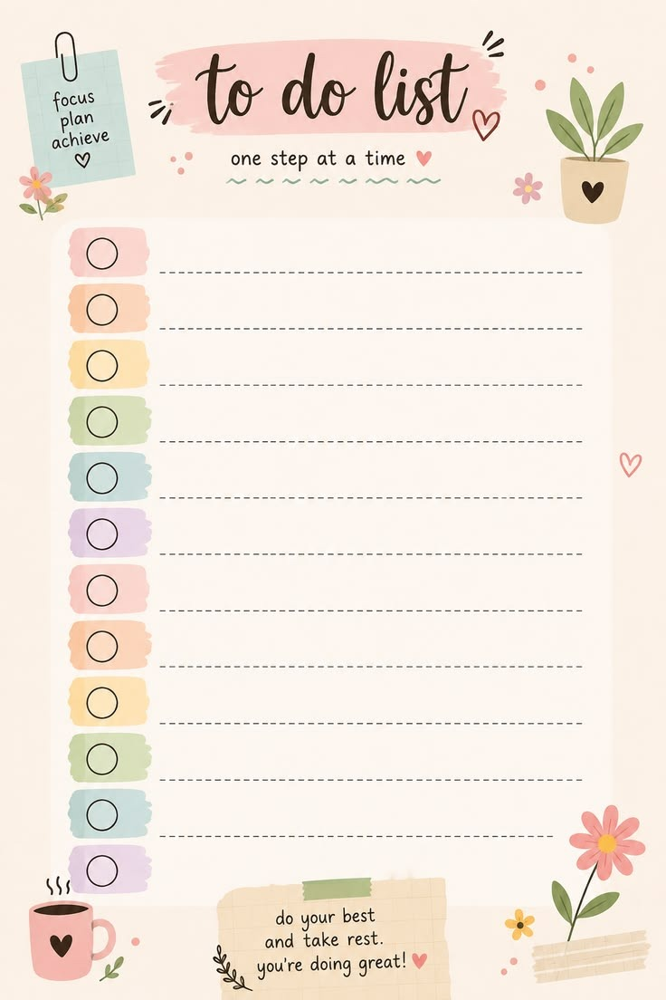

Kelas Pertama
08:00 - 10:00
Tenggat: 2026-10-15
Prioritas: Tinggi
Belum selesai
08:00 - 10:00
Tenggat: 2026-10-15
Prioritas: Tinggi
10:30 - 12:30
Tenggat: 2026-10-15
Prioritas: Sedang
13:00 - 15:00
Tenggat: 2026-10-15
Prioritas: Rendah
15:30 - 18:00
Tenggat: 2026-10-17
Prioritas: Rendah
